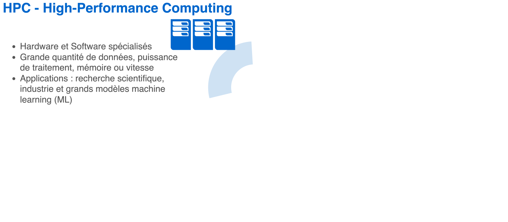
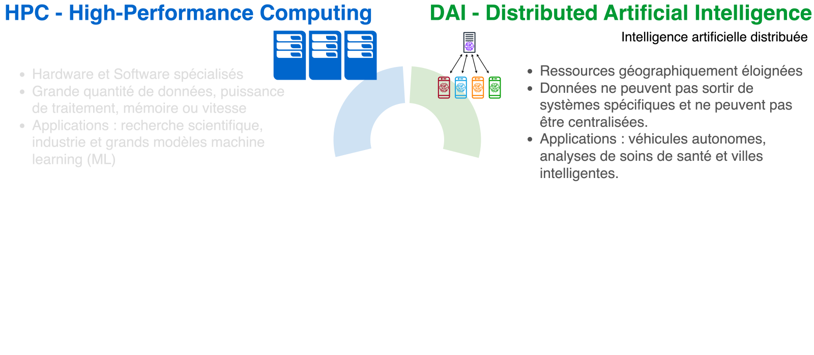
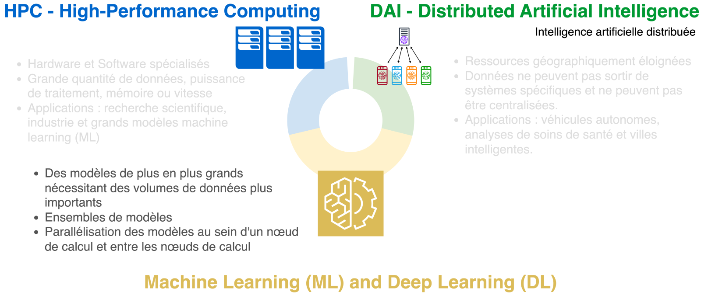
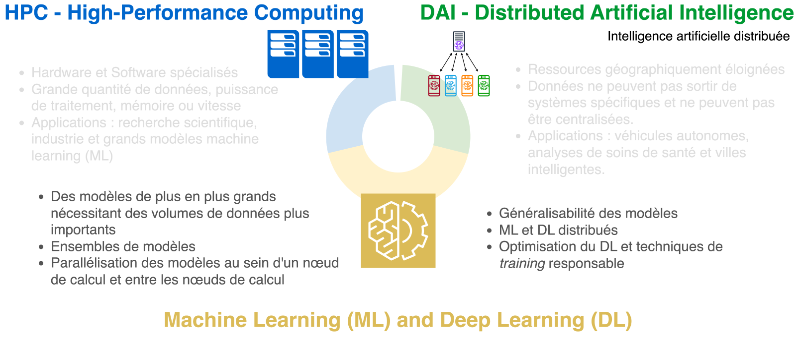
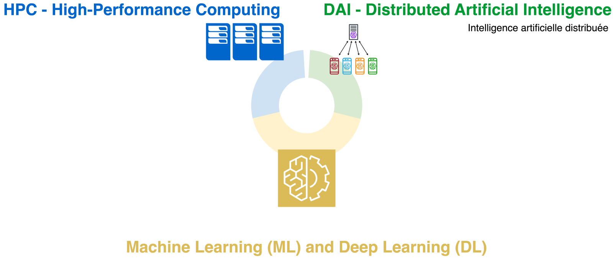

name: title layout: true class: center --- layout: false count: false .middle.center[ # Unité 30X.Y - HPC et IA distribuée <br /> <br /> ### Oscar Esteban < phd@oscaresteban.es > ] ??? Bonjour à tous. Bienvenue dans l'unité 30x.y sur l'HPC et l'IA distribuée. Je m'appelle Oscar Esteban et vous pouvez me joindre à l'adresse e-mail (peut-être) indiquée sur le slide. Tous les documents concernant ce cours seront publiés sur le première lien. Ces slides sont accessibles en ligne avec le deuxième lien. Mais d’abord, laissez-moi vous expliquer en quoi consiste ce cours et ce que vous en apprendrez. Le titre du cours contient deux acronymes principaux : HPC et DAI. Que signifient-ils? --- name: newsection layout: true .perma-sidebar[ <p class="rotate"> <a rel="license" href="http://creativecommons.org/licenses/by/4.0/"><img alt="Creative Commons License" style="border-width:0; height: 20px; padding-top: 6px;" src="https://i.creativecommons.org/l/by/4.0/88x31.png" /></a> <span style="padding-left: 10px; font-weight: 600;">30X.Y - HPC et IA distribuée</span> </p> ] --- ## HPC et DAI : qu'est-ce que ça signifie ? <br /> <br /> <br />  ??? HPC signifie High-Performance Computing ou calcul haute performance, qui consiste à utiliser des hardware et software spécialisés pour effectuer des tâches de calcul qui dépassent les capacités d'un seul ordinateur. En effet, les systèmes HPC comprennent un certain nombre d'ordinateurs puissants appelés « nœuds ». L'HPC nous permet de résoudre des problèmes qui nécessitent une grande quantité de données, de puissance de traitement, de mémoire, etc. L'HPC est essentiel pour la recherche scientifique, l’industrie et en particulier les grands modèles de machine-learning. --- ## HPC et DAI : qu'est-ce que ça signifie ? <br /> <br /> <br />  ??? Il faut distribuer les modèles quand les données ne peuvent pas sortir, pour exemple, le réseau d'un hôpital pour éviter la fuite des données privées des patients, ou le téléphone d'un client lorsqu'il n'a pas donné l'autorisation de partager les données. Un nouveau concept baptisé « Edge Computing » émerge actuellement avec le déploiement du DAI. Les dispositifs Edge sont généralement séparés par de longues distances physiques et peuvent avoir des connexions lentes ou peu fiables. Cependant, HPC et DAI ne sont pas directement connectés. --- ## HPC et DAI : qu'est-ce que ça signifie ? <br /> <br /> <br />  ??? Nous acquerrons les connaissances nécessaires sur le machine-learning (ML) et le Deep Learning (DL) pour comprendre la relation entre HPC et DAI. ML/DL et HPC ont une relation mutuellement bénéfique. Avec l'avancée du HPC, les modèles ML et DL peuvent apprendre des ensembles de données plus volumineux ou devenir plus sophistiqués, et en même temps, la conception de nouveaux algorithmes ML et DL a exigé des HPC plus puissants. Dans ce cours, nous verrons comment les modèles ML et DL conviennent généralement pour être agrégés et permettent généralement de paralléliser l'appretissage et l'inférence au sein d'un nœud et de les distribuer sur deux nœuds ou plus. --- ## HPC et DAI : qu'est-ce que ça signifie ? <br /> <br /> <br />  ??? De l'autre côté, ML et DL sont des techniques fondamentales au sein de l’AI plus générale. Nous exploiterons nos connaissances en matière de parallélisation et de distribution sur HPC pour un déploiement dans des ressources dispersées telles que des dispositifs Edge. À ce stade, nous nous intéresserons à la notion de généralisabilité. Si des techniques particulières ne sont appliquées, un modèle de prédiction ne sera normalement pas en mesure de fonctionner correctement sur domains de données jamais vus lors du training. C'est a dire, le modèle ne « généralisera » pas. Ceci est critique, par exemple, si une voiture autonome est uniquement entraînée sur un campus universitaire, elle aura probablement vu de nombreux jeunes et pourrait ne pas identifier à temps une personne âgée qui traverse lentement la route. En effect, cette voiture n'a pas été entraînée à voir des humains qui se déplacent lentement. La distribution du modèle ne fera qu'exacerber les problèmes de généralisation, car la plupart des données d'entraînement sont inaccessibles par le système. --- ## HPC et DAI : qu'est-ce que ça signifie ? <br /> <br /> <br />  ??? Maintenant, merci de garder une mémoire visuelle des trois couleurs représentant les trois sections de cette unité. --- ## Programme <object data="images/program.pdf" type="application/pdf" style="margin-top: 15px;" width="90%" height="80%"> <embed src="images/program.pdf"> <p>This browser does not support PDFs. Please download the PDF to view it: <a href="images/program.pdf">Download PDF</a>.</p> </embed> </object> ??? Nous avons ici une vue du programme, vous en avez une copie imprimée avec vous. La première colonne vous indique le numéro de la semaine, la deuxième colonne est le numéro du cours, ensuite le titre du cours et la dernière colonne indique le contenu spécifique couvert dans chaque cours. Les couleurs du slide précédente sont répétées ici : bleu pour le module HPC, jaune pour ML/DL et vert pour DAI. --- # Objectifs .boxed-content[ .distribute.large[ * Établir des bases théoriques solides de HPC, ML+DL et DAI * *Learning by doing* * Vous utiliserez le cluster local appelé DISCO, et le calcul Cloud commercial. * Vous déployerez des modèles avec des outils clés : scikit-learn et PyTorch * Développer les compétences que la recherche universitaire de pointe et les grandes entreprises exigent des ingénieurs en IA ] ] ??? Nos principaux objectifs dans ce cours sont trois : Tout d'abord, cette unité vous fournira tous les fondements théoriques du HPC, du ML, de l'IA et du DAI, telles que les concepts, les principes et les méthodes. Deuxièmement, nous ne nous arrêtons pas à la théorie. L'unité vous fournira des outils et des techniques spécifiques qui combleront le fossé entre la théorie et la mise en œuvre. L'unité vous proposera de construire vos connaissances en les mettant en pratique. Ça consolidera ces connaissances fondamentales. Enfin, vous développerez de nombreuses compétences et aptitudes actuellement très demandées par la recherche, que ce soit dans le milieu universitaire ou dans l'entreprise, en tant qu'ingénieurs en AI. Maintenant, jetons un bref aperçu de la méthodologie. --- ## Déroulement de l'unité (1) .boxed-content[ .distribute.larger[ * Le code source d'abord, même ces slides sont réalisées avec Markdown * Transparence : accédez à chaque détail de la façon dont les choses sont construites * Intégration : avec le web ou avec des utilitaires comme asciinema * *Open* <span class="fa-sharp fa-solid fa-right-long" style="color: #aaa;"></span> proposer des améliorations, corriger des erreurs .hidden-text[ * Apprendre par la pratique (à tous les niveaux) * Cours spéciaux : « *changing hats* » et « *hands-on* » * Jupyter notebooks et nombreux exemples ]]] ??? Premièrement, le code source est un VIP - et on commence par ces slides car ils sont écrites avec Markdown Pourquoi le code sera-t-il si important ? - Premièrement, le code est un outil fondamental pour comprendre comment les modèles sont construits, comment fonctionnent les algorithmes et la meilleure façon de formaliser ces connaissances. Nous ne voulons pas considérer les modèles ML/DL comme des boîtes opaques : nous devons regarder à l’intérieur. - Deuxièmement, le code peut être réalisé de manière modulaire et permettre des intégrations. Par exemple, en créant ces slides avec du code, nous pouvons facilement intégrer des objets Web et utiliser des outils dynamiques tels que les asciicasts (que je montrerai dans une seconde). - Enfin, c'est ouvert - vous êtes encouragé à corriger ou améliorer n'importe quel aspect de l'unité. Le code facilite cette contribution. --- count: false ## Déroulement de l'unité (1) .boxed-content[ .distribute.larger[ .gray-text[ * Le code source d'abord, même ces slides sont réalisées avec Markdown * Transparence : accédez à chaque détail de la façon dont les choses sont construites * Intégration : avec le web ou avec des utilitaires comme asciinema * *Open* <span class="fa-sharp fa-solid fa-right-long" style="color: #aaa;"></span> proposer des améliorations, corriger des erreurs ] * Apprendre par la pratique (à tous les niveaux) * Cours spéciaux : « *changing hats* » et « *hands-on* » * Jupyter notebooks et nombreux exemples ]] ??? Le deuxième aspect méthodologique (qui a été introduit comme objectif) est l’apprentissage par la pratique. Nous aurons à cet effet deux types de cours spéciaux. J'expliquerai les cours de « Changing-hats » et de « Hands-on » après. Enfin, nous utiliserons des notebooks Jupyter pour exécuter du code en direct, ainsi que des exemples de code comme celui-ci. --- ## Déroulement de l'unité (2) - exemples ``` Markdown ## Deroulement de l'unité (1) .boxed-content[ .distribute.larger[ * Le code source d'abord, même ces slides sont réalisées avec Markdown * Transparence : accédez à chaque détail de la façon dont les choses sont construites * Intégration : avec le web ou avec des utilitaires comme asciinema * *Open* <span class="fa-sharp fa-solid fa-right-long" style="color: #aaa;"></span> proposer des améliorations, corriger des erreurs * Apprendre par la pratique (à tous les niveaux) * Cours spéciaux : « *changing hats* » et « *hands-on* » * Jupyter notebooks et nombreux exemples ]] ``` .tiny[(Une faute de frappe a été insérée intentionnellement)] ??? Ici, vous pouvez voir le code du slide précédente. Nous utiliserons des exemples de code tout le temps. Il est modifié pour introduire une faute de frappe, est-ce que vous l'avez déjà détecté ? On va résoudre ce problème. Nous sommes sur le point de voir une asciicast. Ça ressemble à une vidéo, mais ce n'est pas une vidéo, car ça vous permet de copier le texte et de le coller dans votre ordinateur. Il permettra une expérience « en direct », tout en étant préenregistré pour garantir que le flux du cours ne soit pas interrompu par des erreurs. --- ## Déroulement de l'unité (3) - exemples .boxed-content[ <div class="asciicast" id="636539"></div> ] ??? Les différentes étapes de l'asciicast ne sont pas particulièrement importantes. L'essentiel est que nous corrigions l'accent manquant dans le mot « Déroulement » dans le titre. La vidéo utilise git, car tout le code de cette unité est administré et sous contrôle de version avec lui. A la fin de la démo, on peut voir en rouge l'ancien code (qui comporte la faute de frappe) et en vert le code corrigé. Lorsque vous soumettez des corrections ou des améliorations au matériel, vous obtenez des points bonus qui peuvent compenser des oublis mineurs lors de l'examen, par exemple. --- ## Déroulement de l'unité (4) .boxed-content[ .distribute.larger[ * « *Hands-on* » : * 10 mini-projets sont proposés * les étudiants sont regroupés par deux * chaque groupe sélectionne un mini-projet * « *Changing hats* » : * étudiants et professeur changent de rôle * un élève enseigne un sujet pendant 15 minutes (trois par cours) * Devoirs : * recommandés, mais facultatifs et ne comptent pas dans la note finale ]] ??? Nous aurons cinq cours "Changing-hats", où trois étudiants échangeront leurs rôles avec les profs et enseigneront chacun sur un sujet préparé pendant 15 minutes. Chaque étudiant enseignera une fois, et ça fait partie de l'évaluation. Nous vous fournirons du matériel et vous aiderons à préparer votre mini-cours. Les cours de "Changing-hats" seront suivis d'un cours de consolidation où nous regarderons en arrière et nous assurerons que les sujets ont été correctement enseignés et couverts, ainsi que répondre aux questions. Nous proposons également sept cours « hands-on ». Vous serez répartis par deux et choisirez un mini-projet parmi les 10 proposés. Pendant les 45 min de cours, vous développerez le mini-projet avec votre partenaire (qui changera entre les cours pratiques) Nous vous proposerons des devoirs légers à la fin de chaque cours. Ceux-ci sont facultatifs, mais recommandés, et ils nous aideront à relier une classe à la suivante. --- ## Déroulement de l'unité (5) .boxed-content[ .distribute[ .larger[ La dernière ligne droite de l'unité: 60. Préparation à l'examen 61. Invitée special 62. Examen ] .large[ Calcul de la note: ] .large[ \\[ G_\text{30X.Y} = 0.4 \, \cdot \, e \, + \, 0.4 \, \cdot \, p \, + \, 0.2 \, \cdot \, \sum_i \frac{h_i}{N} \, + \sum_j c_j \\] ]]] ??? Les cinq derniers cours se situent en dehors des trois composantes principales du cours. Nous aurons une classe pour préparer l'examen, puis nous inviterons une figure. La note finale correspond à quarante pour cent de l'examen, à quarante pour cent de votre présentation « Changing-hats » et à vingt pour cent de la moyenne des sept mini-projets « Hands-on ». En plus de ça, vous obtenez un bonus si vous contribuez aux matériaux de l'unité avec des corrections ou des suggestions. --- ## C'est parti ! .boxed-content.large[ .distribute[ * Devoir : * Regardez le programme et listez les trois sujets les plus intéressants pour vous et les trois moins intéressants ainsi que les raisons qui ont motivé vos choix. * Cette unité en une phrase : * *S'équiper de la théorie et de la pratique nécessaires pour déployer des solutions d'IA de qualité industrielle sur HPC, Cloud et Edge*. * Des questions ? ]] ??? Comme premier devoir, parcourez le programme et listez les trois sujets les plus intéressants et les moins intéressants si vous avez le temps avant le prochain cours. En une seule phrase, cette unité vous préparerai à relever des défis et des recherches d'avant-garde au sein du monde universitaire et de l'entreprise. Si vous êtes curieux de connaître des compétences et aptitudes plus spécifiques que vous maîtriserez à la fin de l'unité, j'ai des slides supplémentaires sur ce sujet. Merci de votre attention. Est-ce que vous voulez poser de questions? --- count: false ## HPC - Compétences et résultats d'apprentissage .boxed-content[ .distribute.larger[ * Maîtriser les concepts et principes de base du calcul haute performance (HPC), tels que le parallélisme, la concurrence, la synchronisation, l'évolutivité et l'efficacité. * Utiliser SLURM pour soumettre et gérer des tâches sur le cluster, en toute conscience des performances et de l'utilisation des ressources. * Prendre des décisions éclairées lors du choix entre le HPC ou le cloud computing pour une solution particulière. * Appliquer des techniques de parallélisation à divers problèmes et plates-formes * Fournir des exemples d'applications concrètes qui démontrent l'impact du HPC. ]] --- count: false ## ML/DL - Compétences et résultats d'apprentissage .boxed-content[ .distribute.larger[ * Maîtriser les concepts et principes de base de l'apprentissage automatique (ML) * Implémenter et appliquer des algorithmes de ML avec scikit-learn * Concevoir et optimiser des pipelines de données qui combinent des modèles ML et DL avec des techniques classiques de traitement du signal * Maîtriser les fondements du DL * Utiliser PyTorch pour les problèmes de computer vision et de traitement du langage naturel ]] --- count: false ## DAI - Compétences et résultats d'apprentissage .boxed-content[ .distribute.larger[ * Maîtriser les concepts fondamentaux et les défis de l'IA distribuée * Implémenter et appliquer des techniques de parallélisation et de formation distribuée avec PyTorch * Concevoir et évaluer des modèles ML/DL robustes et équitables * Appliquer des modèles et des techniques pertinents en computer vision et en traitement du langage naturel avec PyTorch * Comprendre la raison d'être de l'apprentissage fédéré et ses principaux défis ]]